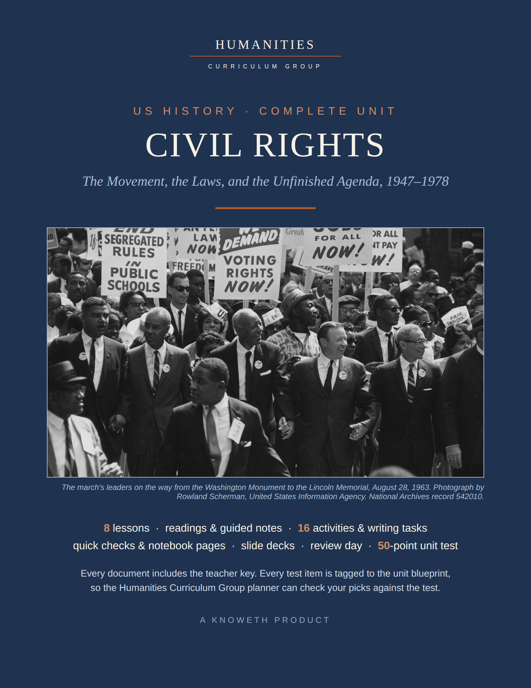

The fourteenth unit in the course, included with All-Access. Eight lessons, a review day, and the unit test, fifty-one documents in all, plus a slide deck with full speaker notes and a teacher notes document for every lesson. Every PDF includes the teacher key, and every document follows the same print standard as the sample unit: black text, open writing space, no ink-heavy design. If you are new here, the Progressive Era unit is the free sample, and it runs on the same plate and the same planner. Primary source work for this unit lives in the bank at The Primary Source Project, which holds audited sources for this era.
Get this unit with All-Access See the free sample unit Plan this unit
The unit opens before the famous decade, with the system and the institutions built to break it. Jim Crow stood as law and custom across the South: segregation in schools, transport, and public life, and disfranchisement by poll tax, literacy test, white primary, and violence. Against it stood the Black church, the Black college, the Black press, and the NAACP, in court since 1909. The war added a million Black servicemen, the Double V campaign, and a second Great Migration north, and the first federal steps followed: To Secure These Rights in 1947, Truman's 1948 message, and Executive Order 9981, ordering equality in the armed forces.
Houston's strategy attacked segregation where it was most unequal, and Marshall carried it to the elementary schools, where the Court answered on May 17, 1954, unanimously, that separate educational facilities are inherently unequal. Brown II's all deliberate speed gave massive resistance its opening, until Cooper v. Aaron held that no state official may nullify the Court. Montgomery built the movement's method, a 381-day boycott ending with the buses desegregated. Little Rock tested whether a governor could bar the schoolhouse door; Eisenhower's address, Executive Order 10730, and the 101st Airborne answered. Between the two stands Emmett Till, murdered at fourteen, his killers acquitted, his mother letting the nation see what the jury excused.
The students changed the pace. Four freshmen sat down at a Greensboro lunch counter in February 1960, and the sit-ins ran through the South in weeks; Nashville's workshops, SNCC, and CORE's Freedom Rides followed. Birmingham supplied the crisis in 1963: the Letter from a jail cell, the Children's Crusade, and hoses and dogs on camera, until the city settled and Kennedy, on June 11, called civil rights a moral issue and sent Congress his bill. A quarter of a million people carried the case to Washington that August. Eighteen days later a bomb in the 16th Street Baptist Church killed four girls, with the bill still stalled.
The laws came in 1964 and 1965, the Civil Rights Act after a filibuster broken by cloture, the Voting Rights Act out of Selma and Bloody Sunday. Days after the second signing, Watts burned, and the northern turn met de facto segregation in Chicago, the Black Power argument, the Panthers, and Memphis, where King was assassinated. The unit closes with the reckoning: the Fair Housing Act, the Kerner verdict of two societies, busing stopped at the city line, affirmative action, and Bakke. The unit is organized around the essential question, “How did the civil rights movement change American law and American life, and what did it leave unfinished?” Each lesson has a reading, guided notes, slides with full speaker notes, an activity, a notebook page, a quick check, and a writing task. A review day gives students a study guide and crossword before the 50-point unit test. Every test item is tagged in the key to a published 15-entry blueprint, so students and teachers can see what the test asks and where that material was taught. The planner turns those choices into a calendar and checks the selected work against the blueprint, naming any gap while there is still time to close it.

Print it for the front of the unit packet, or keep it as the first page of the digital bundle. The cover ships with the unit in All-Access. The three previews further down show the full plate, two real pages from the lessons, and the test key's blueprint tags.
Test blueprint: the ground before: Jim Crow, disfranchisement, and the institutions Black Americans built; the war's inheritance and the first federal steps: Double V, To Secure These Rights, and Executive Order 9981
Test blueprint: the legal strategy pays off: Houston, Marshall, and the Brown decision; massive resistance: Brown II, the Southern Manifesto, school closings, and Cooper v. Aaron
Test blueprint: montgomery: the boycott, the MIA, King, and mass nonviolent protest; little Rock and Till: federal power against a governor, and a murder that showed the nation
Test blueprint: the students move: the sit-ins, Nashville, and SNCC; freedom Rides and Albany: testing federal enforcement and learning its limits
Test blueprint: birmingham: the Letter, the Children's Crusade, and the pressure that moved Kennedy; the March on Washington and the movement's public case
Test blueprint: the Civil Rights Act of 1964: the filibuster broken and what the act reached; selma and the Voting Rights Act of 1965
Test blueprint: the northern turn: de facto segregation, Chicago, and Watts; black Power and the last King: Malcolm X's inheritance, Carmichael, the Panthers, Memphis, and the assassination
Test blueprint: the reckoning: the Kerner verdict, the Fair Housing Act, busing, affirmative action, Bakke, and the unfinished agenda
The test is 50 points: matching, multiple choice, and a source-based section built on Brown v. Board of Education (347 U.S. 483), from the audited TPSP record, the Civil Rights Act of 1964, Title II, Section 201(a) and Title VI, Section 601, from the audited record in the Statutes at Large via GovInfo, and Rowland Scherman's United States Information Agency photograph of the March on Washington, August 28, 1963, presented from the bank record's visual description.
Three pages from the listing, built from the actual documents.
The fifteen entries the unit test assesses. Every assignment above is tagged to the entries it teaches, which is what the planner's coverage check reads.
| # | Blueprint entry | Taught in |
|---|---|---|
| 1 | The ground before: Jim Crow, disfranchisement, and the institutions Black Americans built | Lesson 1 |
| 2 | The war's inheritance and the first federal steps: Double V, To Secure These Rights, and Executive Order 9981 | Lesson 1 |
| 3 | The legal strategy pays off: Houston, Marshall, and the Brown decision | Lesson 2 |
| 4 | Massive resistance: Brown II, the Southern Manifesto, school closings, and Cooper v. Aaron | Lesson 2 |
| 5 | Montgomery: the boycott, the MIA, King, and mass nonviolent protest | Lesson 3 |
| 6 | Little Rock and Till: federal power against a governor, and a murder that showed the nation | Lesson 3 |
| 7 | The students move: the sit-ins, Nashville, and SNCC | Lesson 4 |
| 8 | Freedom Rides and Albany: testing federal enforcement and learning its limits | Lesson 4 |
| 9 | Birmingham: the Letter, the Children's Crusade, and the pressure that moved Kennedy | Lesson 5 |
| 10 | The March on Washington and the movement's public case | Lesson 5 |
| 11 | The Civil Rights Act of 1964: the filibuster broken and what the act reached | Lesson 6 |
| 12 | Selma and the Voting Rights Act of 1965 | Lesson 6 |
| 13 | The northern turn: de facto segregation, Chicago, and Watts | Lesson 7 |
| 14 | Black Power and the last King: Malcolm X's inheritance, Carmichael, the Panthers, Memphis, and the assassination | Lesson 7 |
| 15 | The reckoning: the Kerner verdict, the Fair Housing Act, busing, affirmative action, Bakke, and the unfinished agenda | Lesson 8 |